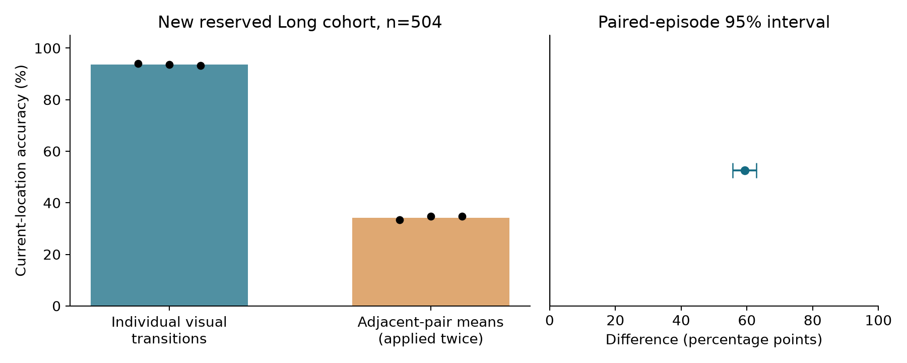
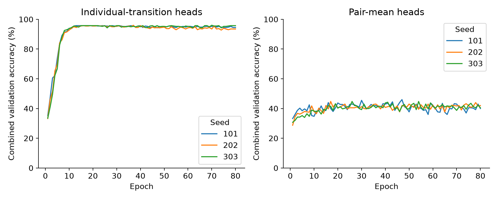

Current study / November 2026
What changes when visual
transitions are averaged?
A controlled study of individual updates versus adjacent-pair means, using the same learned visual predictions and just 47 bytes of retained numeric state.
Manuscript in preparation · Not peer reviewedThe question
With identical predicted visual transitions and matched final decoders, does applying each transition individually outperform averaging adjacent pairs under the same retained-state allowance?
On 504 new reserved simulated episodes, the individual treatment was 59.39 percentage points more accurate. The paired-episode 95% interval was 55.69–62.90 points, conditional on the frozen frontend and three paired final-head seeds.

How the comparison works
A shared, supervised visual frontend predicts a three-by-three matrix of movement probabilities between container slots. Both treatments receive the same predicted matrices. One applies each matrix to a three-value location belief; the other averages adjacent matrices and applies that mean twice. An unmatched final event is unchanged.
Identical final-answer head architectures are fitted separately for each treatment, with matched initialization, training schedule and validation-only selection. The update rule is prescribed probability propagation, not a learned recurrent-memory success. Test transitions are predicted from visual features, not supplied by an oracle.
Training and all three paired results
- Seed 101: 474/504 (94.05%) versus 168/504 (33.33%).
- Seed 202: 472/504 (93.65%) versus 175/504 (34.72%).
- Seed 303: 470/504 (93.25%) versus 175/504 (34.72%).
The 504 episodes are shared across all six heads. Checkpoints and sources were locally frozen before the new test data was generated; this is not external preregistration.

What 47 bytes means
Each treatment retains a 12-byte belief, an 18-byte pending-transition buffer, 12 bytes of candidate coordinates and 5 bytes of counters/flags. The individual treatment also allocates the zeroed buffer, so occupancy is equal under the 64-byte allowance.
Independent reconstruction checks verified the serialized state and all 3,024 final-head predictions. This budget excludes model weights, upstream multi-frame encoding, object overhead and temporary computation. It is not total system RAM.
What this does not establish
- One simulated current-location task family, not real-robot control or a universal claim against pooling, compression or summaries.
- The visual frontend uses simulator correspondence supervision during training. Goal identity and static candidate geometry are supplied at inference.
- A simulator animation/identity convention causes physical endpoint composition to disagree with the query label in 37 of 504 episodes. Actual query layouts agree with the labels; the query head may learn that convention.
- An earlier compact-GRU pilot failed its predeclared validation gate. The probability-propagation study is a separate iteration, not a relabeled GRU success.
Context & references
The contribution is a reproducible diagnostic of this specific averaging operation after shared visual encoding, rather than a new general memory algorithm.
- Cherepanov et al. · MIKASA-Robo-VLA (2026) ↗Benchmark and official Long environment; our offline metric is an adaptation.
- Thrun, Burgard & Fox · Probabilistic Robotics (2005) ↗Background for standard probability propagation.
- Shi et al. · MemoryVLA (2026) ↗Related selective consolidation, not a baseline reproduced here.